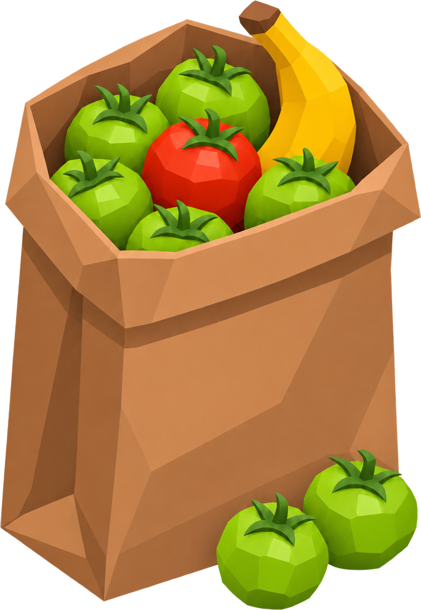
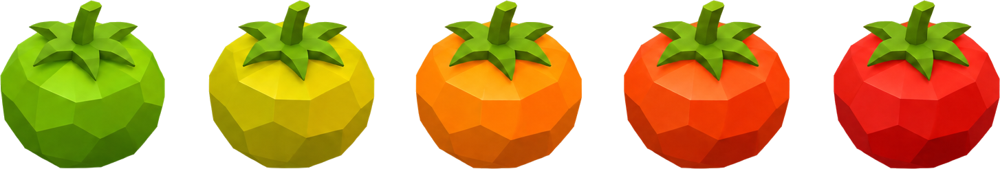

Savjet iz vrta
Kako da zelene rajčice dozriju kod kuće.


Nakon nekoliko dana dio rajčica pocrveni i dozrije.
Zašto? Zrelo voće ispušta etilen, prirodni plin koji potiče zrenje. Vrećica ga zadrži uz rajčice.